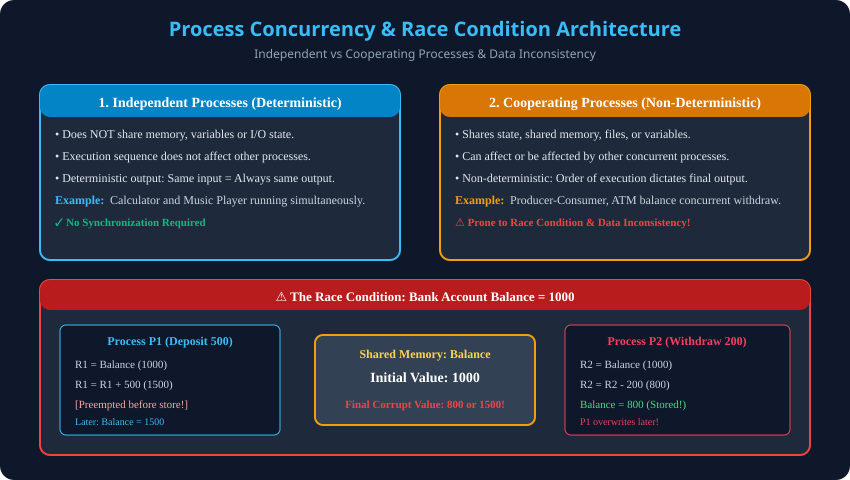

Syllabus Coverage: Gateway Classes Slides 3–15 | Process Concepts, Concurrency Principles, Independent vs Cooperating Processes, Race Conditions.
Program in Execution: Hard disk par program ek passive byte file hota hai. Jab OS isse RAM mein load karta hai, toh yeh active process ban jata hai jiske paas apna context aur resource allocation hota hai.
malloc).| Parameter | Independent Process | Cooperating Process |
|---|---|---|
| Shared State | Koi shared data ya resource nahi hota. | Shared variables, buffer, files ya hardware resources. |
| Execution Effect | Kisi doosre process ko affect nahi karta. | Doosre process ke execution ko directly modify kar sakta hai. |
| Determinism | Deterministic: Same input = Always same result. | Non-deterministic: Outcome depends on execution order. |
| Risk | Zero synchronization hazard. | Race Condition & Data Inconsistency risk! |
Jab concurrent processes bina synchronization ke shared data par read/write karte hain, toh outcome interleaved execution order par depend karta hai.
; Initial Shared Variable: Balance = 1000
; Process P1 (Deposit 500)
1. LOAD R1, Balance ; R1 = 1000
2. ADD R1, 500 ; R1 = 1500
; --- Context Switch to P2 ---
3. LOAD R2, Balance ; R2 = 1000 (stale value!)
4. SUB R2, 200 ; R2 = 800
5. STORE Balance, R2 ; RAM Balance = 800
; --- Context Switch back to P1 ---
6. STORE Balance, R1 ; RAM Balance = 1500! (Withdrawal lost!)